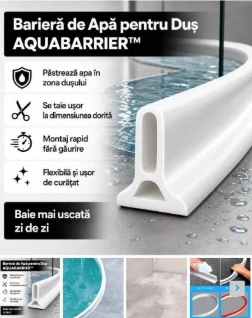

Barieră Flexibilă din Silicon pentru Duș, Autoadezivă
Limitează scurgerea apei în afara zonei de duș cu o barieră flexibilă din silicon, cu bază autoadezivă.
Prețul și stocul sunt afișate conform catalogului furnizat. Confirmă disponibilitatea, cantitatea și condițiile comerciale înainte de comandă.
DETALII PRODUS
Descriere
Limitează scurgerea apei în afara zonei de duș cu o barieră flexibilă din silicon, cu bază autoadezivă.
Bariera flexibilă din silicon pentru duș este un accesoriu conceput pentru delimitarea zonelor umede din baie. Profilul înălțat contribuie la limitarea răspândirii apei pe pardoseală, în funcție de montaj și de configurația suprafeței.
Baza prevăzută cu bandă autoadezivă facilitează montarea pe o suprafață netedă, curată și uscată, fără găurire. Materialul flexibil permite adaptarea la configurația spațiului și tăierea la dimensiunea necesară.
Caracteristici produs
- Material: silicon flexibil
- Culoare: alb
- Montare: bandă autoadezivă
- Design: profil înălțat, cu bază lată
- Destinație: duș, baie și delimitarea zonelor umede
O soluție practică pentru portofoliile B2B de accesorii pentru baie și amenajarea locuinței.
Comandă și informații
Site-ul funcționează în regim de catalog B2B. Nu există plată online sau coș de cumpărături.
Discută pe WhatsApp →DIN ACEEAȘI CATEGORIE